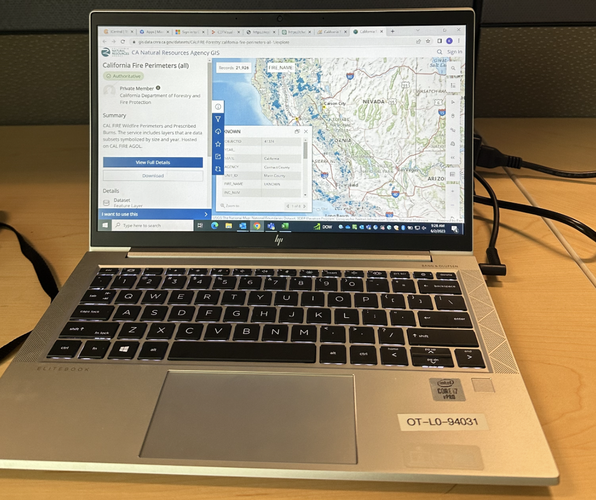
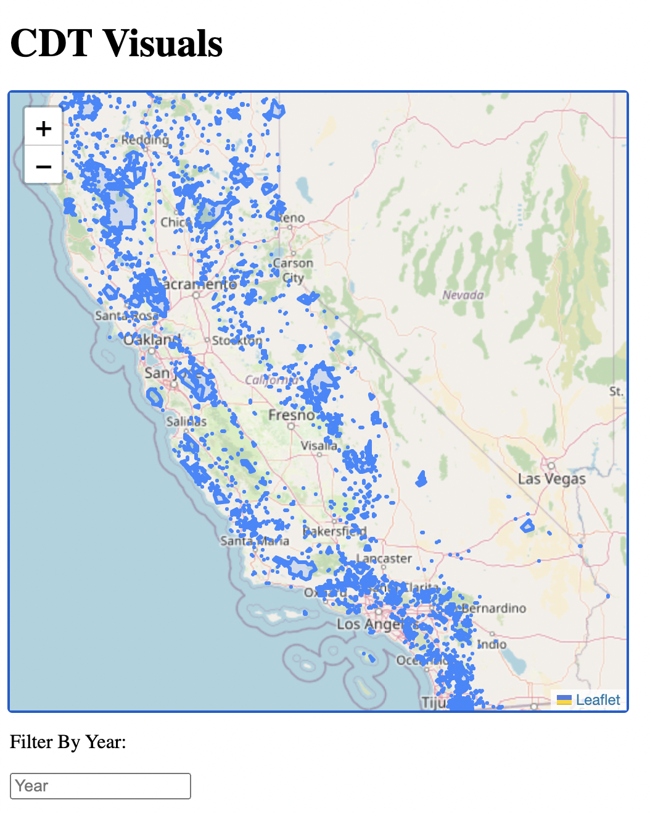
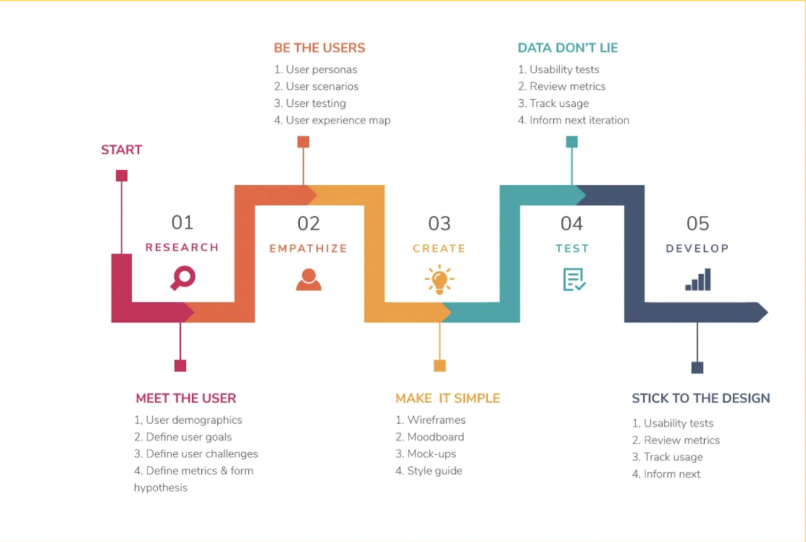
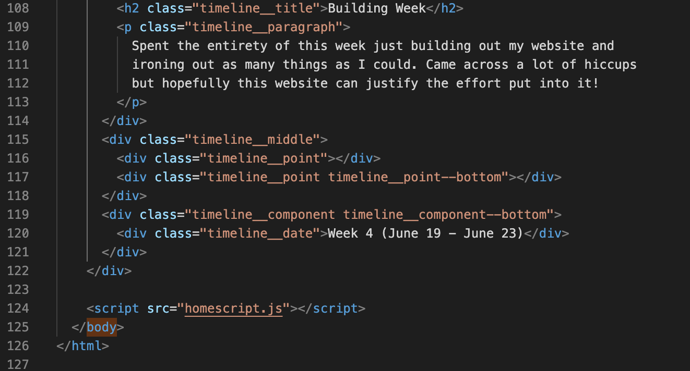

K7's Summer Internship at the CDT
What I've done
Timeline
Set Up
During the first week I got set up with my state account and start playing with tools such as Leaflet and looked through datasets on the GeoPortal
Meeting Different Teams / Planning
During my second week I met a lot of different groups at CDT like the GIS, MMBI, ADF, and Data Teams. I also started to plan out what I wanted to do at my time here and searched through datasets to use.
Designing Week
This week I spent most my time designing what I thouhgt my website should look like as well as finding the datasets to fit what I wanted. I also met with the Dev Team, UX Team, and full ODS Team.
Building Week
Spent the entirety of this week just building out my website and ironing out as many things as I could. Came across a lot of hiccups but hopefully this website can justify the effort put into it!
